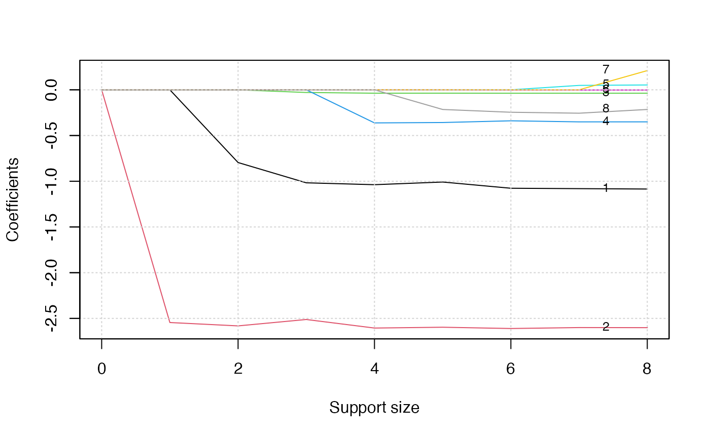

Classification: Logistic Regression and Multinomial Extension
Jin Zhu, Liyuan Hu
6/12/2021
Source:../vignettes/v03-classification.Rmd
v03-classification.RmdTitanic Dataset and Classification
Consider the Titanic dataset obtained from the Kaggle competition: https://www.kaggle.com/c/titanic/data. The dataset consists of data about 889 passengers, and the goal of the competition is to predict the survival (yes/no) based on features including the class of service, the sex, the age etc.
## [1] 891 12
head(dat)## PassengerId Survived Pclass
## 1 1 0 3
## 2 2 1 1
## 3 3 1 3
## 4 4 1 1
## 5 5 0 3
## 6 6 0 3
## Name Sex Age SibSp Parch
## 1 Braund, Mr. Owen Harris male 22 1 0
## 2 Cumings, Mrs. John Bradley (Florence Briggs Thayer) female 38 1 0
## 3 Heikkinen, Miss. Laina female 26 0 0
## 4 Futrelle, Mrs. Jacques Heath (Lily May Peel) female 35 1 0
## 5 Allen, Mr. William Henry male 35 0 0
## 6 Moran, Mr. James male NA 0 0
## Ticket Fare Cabin Embarked
## 1 A/5 21171 7.2500 <NA> S
## 2 PC 17599 71.2833 C85 C
## 3 STON/O2. 3101282 7.9250 <NA> S
## 4 113803 53.1000 C123 S
## 5 373450 8.0500 <NA> S
## 6 330877 8.4583 <NA> QLogistic regression is one of powerful tool to tackle this problem. In statistics, the logistic regression is used to model the probability of a certain class or event existing such as alive/dead, pass/fail, win/lose, or healthy/sick. Logistic regression function is an \(s\)-shaped curve modeling the posterior probability \(p\) via a linear combination of the features. The curve is defined as \(p = \frac{1}{1+\exp(-\eta)}\) where \(\eta = \beta_0+x\beta\) and \(x\) are predictors, and \(\beta_0, \beta\) are coefficients to be learned from data. The logistic regression model has this form: \[ \log(p/(1-p)) = \beta_0 + x\beta. \] The quantity \(\log(p/(1-p))\) is called the logarithm of the odd, also called log-odd or logit. The best subset selection for logistic regression aim to balance model accuracy and model complexity, where the former is achieves by maximizing the log-likelihood function and the latter is characterized by a constraint: \(\| \beta \|_0 \leq s\) and \(s\) can be determined in a data driven way.
Best Subset Selection for Logistic Regression
The abess() function in the abess package allows user to perform best subset selection in a highly efficient way. User can call the abess() function using formula just like what users do with lm(). Or users can specify the design matrix x and the response y. As an example, the Titanic dataset is used to demonstrated the usage of abess package.
Data preprocessing
A glance at the dataset finds there is any missing data. The na.omit() function allows us to delete the rows that contain any missing data. After that, we get a total of 714 samples left.
## [1] 712 8Then we change the factors into dummy variables with the model.matrix() function. Note that the abess function will automatically include the intercept, and thus, we exclude the first column of dat object.
dat <- model.matrix(~., dat)[, -1]
dat <- as.data.frame(dat)We split the dataset into a training set and a test set. The model is going to be built on the training set and later We will test the model performance on the test set.
train_index <- 1:round((712*2)/3)
train <- dat[train_index, ]
test <- dat[-train_index, ]Analyze Titanic dataset with abess package
We use abess package to perform best subset selection for the preprocessed Titanic dataset by setting family = "binomial". The cross validation technique is employed to tune the support size by setting tune.type = "cv".
library(abess)
abess_fit <- abess(x = train[, -1], y = train$Survived,
family = "binomial", tune.type = "cv")After get the estimator, we can further do more exploring work. The output of abess() function contains the best model for all the candidate support size in the support.size. users can use some generic function to quickly draw some information of those estimators. Typical examples include:
i. print the fitted model:
abess_fit## Call:
## abess.default(x = train[, -1], y = train$Survived, family = "binomial",
## tune.type = "cv")
##
## support.size dev cv
## 1 0 321.9560 64.59866
## 2 1 246.5820 49.99585
## 3 2 229.6078 46.65819
## 4 3 229.5308 46.99849
## 5 4 228.9702 45.95916
## 6 5 220.1834 45.34507
## 7 6 220.0022 46.29066
## 8 7 219.9602 46.30510
## 9 8 219.9189 46.43192- draw the estimated coefficients on all candidate support size by
coef()function:
coef(abess_fit)## 9 x 9 sparse Matrix of class "dgCMatrix"
## 0 1 2 3 4
## (intercept) -0.3530971 1.158781 2.9213405 3.051182673 3.261927165
## Pclass . . -0.7952709 -0.833342494 -0.814632228
## Sexmale . -2.545075 -2.5818945 -2.593870586 -2.590161184
## Age . . . . .
## SibSp . . . . .
## Parch . . . . .
## Fare . . . -0.001187224 -0.001680436
## EmbarkedQ . . . . .
## EmbarkedS . . . . -0.305263085
## 5 6 7 8
## (intercept) 4.85381910 5.112842846 5.107729128 5.086770775
## Pclass -1.00849768 -1.076518968 -1.081124454 -1.089943494
## Sexmale -2.59656530 -2.610629567 -2.600187973 -2.598196999
## Age -0.03672237 -0.037470212 -0.037124146 -0.037077478
## SibSp -0.35770272 -0.339008095 -0.350578567 -0.352536406
## Parch . . 0.048181625 0.050990431
## Fare . -0.001998164 -0.002239426 -0.002198745
## EmbarkedQ . . . 0.209753726
## EmbarkedS -0.21507392 -0.245358838 -0.255839632 -0.218910699- get the deviance of the estimated model on all candidate support size via
deviance()function:
deviance(abess_fit)## [1] 321.9560 246.5820 229.6078 229.5308 228.9702 220.1834 220.0022 219.9602
## [9] 219.9189- visualize the change of models with the change of support size via
plot()function:
plot(abess_fit, label=T)
The graph shows that, beginning from the most dense model, the second variable (Sex) is included in the active set until the support size reaches 0. We can also generate a graph about the tuning value.
plot(abess_fit, type = "tune")The tuning value reaches the lowest point at 4, which implies the best model consists of four variables.
Finally, to extract any model from the abess object, we can call the extract() function with a given support.size. If support.size is not provided, the model with the best tuning value will be returned. Here we extract the model with support size equals 6.
## List of 7
## $ beta :Formal class 'dgCMatrix' [package "Matrix"] with 6 slots
## .. ..@ i : int [1:4] 0 1 5 7
## .. ..@ p : int [1:2] 0 4
## .. ..@ Dim : int [1:2] 8 1
## .. ..@ Dimnames:List of 2
## .. .. ..$ : chr [1:8] "Pclass" "Sexmale" "Age" "SibSp" ...
## .. .. ..$ : chr "4"
## .. ..@ x : num [1:4] -0.81463 -2.59016 -0.00168 -0.30526
## .. ..@ factors : list()
## $ intercept : num 3.26
## $ support.size: num 4
## $ support.vars: chr [1:4] "Pclass" "Sexmale" "Fare" "EmbarkedS"
## $ support.beta: num [1:4] -0.81463 -2.59016 -0.00168 -0.30526
## $ dev : num 229
## $ tune.value : num 46The return is a list containing the basic information of the estimated model.
Make a Prediction
Prediction is allowed for all the estimated model. Just call predict.abess() function with the support.size set to the size of model users are interested in. If a support.size is not provided, prediction will be made on the model with best tuning value. The predict.abess() can provide both link, stands for the linear predictors, and the response, stands for the fitted probability. Here We will predict the probability of survival on the test.csv data.
fitted.results <- predict(abess_fit, newx = test, type = 'response')If we chose 0.5 as the cut point, i.e, we predict the person survived the sinking of the Titanic if the fitted probability is greater than 0.5, the accuracy will be 0.80.
fitted.results <- ifelse(fitted.results > 0.5, 1, 0)
misClasificError <- mean(fitted.results != test$Survived)
print(paste('Accuracy',1-misClasificError))## [1] "Accuracy 0.810126582278481"We can also generate an ROC curve and calculate the AUC value. On this dataset, the AUC is 0.87, which is quite close to 1.
library(ROCR)
fitted.results <- predict(abess_fit, newx = test, type = 'response')
pr <- prediction(fitted.results, test$Survived)
prf <- performance(pr, measure = "tpr", x.measure = "fpr")
plot(prf)
auc <- performance(pr, measure = "auc")
auc <- auc@y.values[[1]]
auc## [1] 0.8751124Extension: Multi-class Classification
Best subset selection for multinomial logistic regression
When the number of classes is more than 2, we call it multi-class classification task. Logistic regression can be extended to model several classes of events such as determining whether an image contains a cat, dog, lion, etc. Each object being detected in the image would be assigned a probability between 0 and 1, with a sum of one. The extended model is multinomial logistic regression.
To arrive at the multinomial logistic model, one can imagine, for \(K\) possible classes, running \(K-1\) independent logistic regression models, in which one class is chosen as a ``pivot’’ and then the other \(K-1\) classes are separately regressed against the pivot outcome. This would proceed as follows, if class K (the last outcome) is chosen as the pivot: \[\ln(\mathbb{P}(y = 1) / \mathbb{P}(y = K)) = x^\top \beta^{(1)}, \] \[\cdots \cdots\] \[\ln(\mathbb{P}(y = K - 1) / \mathbb{P}(y = K)) = x^\top \beta^{(K - 1)}.\] Then, the probability to choose the \(j\)-th class can be easily derived to be: \[\mathbb{P}(y = j) = \frac{\exp{(x^\top \beta^{(j)})}}{1 + \sum_{k=1}^{K-1} \exp{(x^\top \beta^{(k)})}}, \] and subsequently, we would predict the \(j^{*}\)-th class if the \(j^* = \arg\max_{j} \mathbb{P}(y = j)\). Notice that, for \(K\) possible classes case, there are \(p \times (K - 1)\) unknown parameters: \(\beta^{(1)}, \ldots, \beta^{(K-1)}\) to be estimated. Because the number of parameters increase as \(K\), it is even more urge to constrain the model complexity. And the best subset selection for multinomial logistic regression aims to maximize the log-likelihood function and control the model complexity by restricting \(B = (\beta^{(1)}, \ldots, \beta^{(K-1)})\) with \(\| B \|_{0, 2} \leq s\) where \(\| B \|_{0, 2} = \sum_{i = 1}^{p} I(B_{i\cdot} = {\bf 0})\), \(B_{i\cdot}\) is the \(i\)-th row of coefficient matrix \(B\) and \({\bf 0} \in R^{K - 1}\) is an all zero vector. In other words, each row of \(B\) would be either all zero or all non-zero.
Multinomial logistic regression with abess Package
We shall conduct Multinomial logistic regression on an artificial dataset for demonstration. The generate.data() function provides a simple way to generate suitable for this task. The assumption behind is the response vector following a multinomial distribution. The artifical dataset contain 100 observations and 20 predictors but only five predictors have influence on the three possible classes.
library(abess)
n <- 100
p <- 20
support.size <- 5
dataset <- generate.data(n, p, support.size, family = "multinomial", class.num = 3)
head(dataset$y)## [1] 1 2 1 1 0 0
dataset$beta## [,1] [,2] [,3]
## [1,] 0.000000 0.000000 0.000000
## [2,] 0.000000 0.000000 0.000000
## [3,] 0.000000 0.000000 0.000000
## [4,] 0.000000 0.000000 0.000000
## [5,] 0.000000 0.000000 0.000000
## [6,] 16.244248 6.605285 4.958967
## [7,] 0.000000 0.000000 0.000000
## [8,] 0.000000 0.000000 0.000000
## [9,] 0.000000 0.000000 0.000000
## [10,] 0.000000 0.000000 0.000000
## [11,] 3.462001 6.774016 20.454220
## [12,] 0.000000 0.000000 0.000000
## [13,] 18.987979 13.133145 17.211335
## [14,] 8.034160 1.117907 2.904334
## [15,] 0.000000 0.000000 0.000000
## [16,] 0.000000 0.000000 0.000000
## [17,] 0.000000 0.000000 0.000000
## [18,] 23.307996 17.576156 11.922882
## [19,] 0.000000 0.000000 0.000000
## [20,] 0.000000 0.000000 0.000000To carry out best subset selection for multinomial logistic regression, users can call the abess() function with family specified to multinomial. Here is an example.
abess_fit <- abess(dataset[["x"]], dataset[["y"]],
family = "multinomial", tune.type = "cv")
extract(abess_fit)[["support.vars"]]## [1] "x6" "x11" "x13" "x14" "x18"Notice that the abess() correctly identifies the support set of the ground truth coefficient matrix.